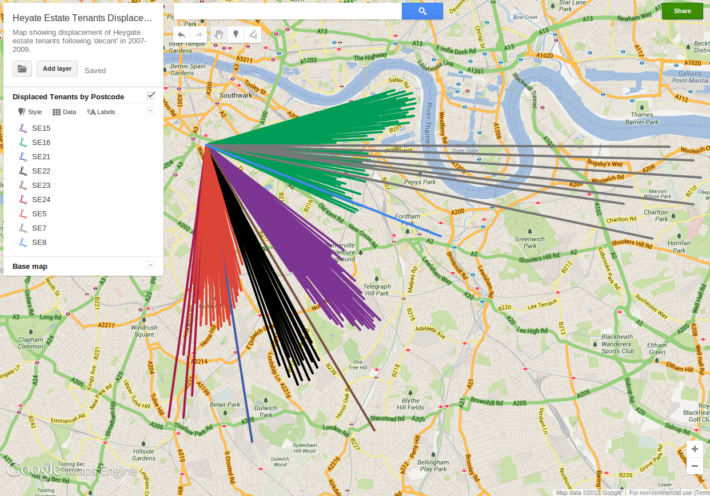
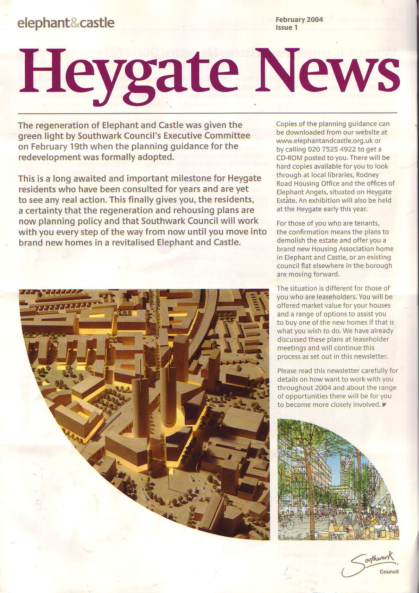

Forced Displacement
Heygate residents were never balloted on the decision to demolish their homes. This was a bone of contention during the preliminary stages of the regeneration, and in a 2003 interview Regeneration Director Chris Horn said "The estate is so central to the entire area's regeneration scheme, that a single issue 'yes' or 'no' vote is not appropriate."
In terms of consultation there was only ever a number of 'opinion surveys' conducted over the years, which included questionnaires at exhibitions or surveys delivered to letterboxes. The one survey that received more responses than any other was the 1999 MORI poll, in which 48% of the questionnaires were returned. The results were split evenly across 3 of the 4 available options:
- Repair and improve all existing buildings - 29%
- Demolish and rebuild high-rise blocks whilst retaining and refurbishing low-rise - 25%
- Rebuild entire estate (with reprovision of all council homes for residents to return to) - 32%
- Demolish entire estate and build no new council homes - 5%
Southwark misinterpreted the findings of this survey by adding options 2,3 & 4 together to claim that: "62% of residents wanted all or part of the estate demolished".

What happened to the Tenants?
Having been told that the council didn't have the money to maintain their homes, tenants were promised new homes - either in the new Heygate development or in a number of so-called 'early housing' sites: the council had planned to work in partnership with housing associations to build 1,100 new social rented homes on council-owned plots of land located around the Elephant & Castle, which would replace the 1,100 social rented homes to be lost on the Heygate. The idea was that the council would give away free plots of land to housing assocations, which would build new homes in a mix of private and affordable units - the affordable units being subsidised by the free land, and the sale of private units plus grant funding. The 15 'early housing' sites were laid out in a glossy rehousing information pack issued to Heygate tenants in Autumn 2004, showing the sites in detail so that they could select which of the new homes they wanted to move into. The foreword to the information pack included the following pledge from deputy leader Cllr Cathy Bowman: "We have made sure that the construction of your new homes is the first thing that happens in this regeneration scheme." But many of the 15 council-owned sites earmarked for the replacement housing happened to be green spaces and play areas on surrounding housing estates. This naturally met with fierce opposition from local residents, and by 2007 none of the early housing sites had been built and none had obtained planning permission. To avoid further delay of the regeneration scheme, Southwark decided to move everyone off the estate nonetheless. Council tenants were to be rehoused in historic council housing stock, insecure tenants would be dealt with according to their individual circumstances - some getting council housing, some maybe not. Leaseholders were still promised a retained equity option on the new homes to be built, but this was never to materialise. The decant decision was drawn up and passed by Cabinet in a report called the 'Heygate Action Plan', which justified the decision to bring forward the decant as follows: "Demolition of the Heygate will provide symbolic and tangible evidence to the people of Southwark that the Council is driving ahead with the regeneration of the Borough"[Para. 8]. In fact there was no need to decant the estate at the time: there was no regeneration agreement in place; no masterplan or planning permission for the Heygate footprint had been approved, and the site now still remains standing empty 7 years later.
At the beginning of the decant in 2007, there were still nearly 600 tenants on the estate and as a consolation they were offered a 'Right to Return'. This was a return to both the 'early housing sites' and the new Heygate homes once they had been built - it was valid for 7 years up to 2015. We now know that only 8 social rented homes are due to have been completed on the first phase of development within the Heygate footprint by this time, and only 45 Heygate tenants[1] have been rehoused in the so-called 'early housing sites' to date - everybody else remains in the historic council housing stock they moved into when they left the estate. From a Freedom of Information request, we also now know that only around 1 in 5 Heygate secure tenants actually remain in the SE17 postcode (216 tenants out of 1034).  Those tenants who objected were simply subjected to eviction proceedings under the 1985 Landlord & Tenant Act, which were systematically initiated against those tenants who had failed to bid and accept a property within a period of six months. According to a document tabled during the Feb 2013 Public Inquiry, a total of 198 tenanted households were issued with Notices to Seek Possession. Tenants were highly dissatisfied with the process, and many were forced to move into unsuitable alternative accommodation in distant corners of the borough. An internal report from Oct 2008 shows a total of 315 households bidding on just 35 available properties in the council's homesearch system.
Leaseholders
Leaseholders were originally promised a 'retained equity' option on the new homes in both the early housing sites and the new Heygate development. But this never got written into the final development agreements with developers. Not one single leaseholder has moved into a new home in any of the early housing sites, and none will return to the Heygate as they had been promised. Most have been forced to relocate outside central London because of the low valuations offered by the council. Analysis of information received from FOI requests shows that the average compensation [indexed to today's value] received by leaseholders was as follows:
- 1 Bed flat - £108,164
- 2 Bed flat - £122,140
- 3 Bed Maisonette - £185,070
- 4 Bed Maisonette - £209,440
This is why most leaseholders have been forced to relocate outside central London:
 Google Map Overlay showing displacement of Heygate leaseholders
Google Map Overlay showing displacement of Heygate leaseholdersOn average the [indexed] compensation paid to leaseholders amounts to just 31% of the price of the new Heygate homes, which are currently being marketed in China, Singapore, Malaysia and Hong Kong.
Leaseholders had stronger rights to object as they couldn't be evicted like the tenants. The council needed a Compulsory Purchase Order before it could evict leaseholders, but in order to obtain this it needed to demonstrate to the Secretary of State that there was a 'strong likelihood of the development plans being implemented within a reasonable time frame'. However, with no regeneration agreement signed or development plan for the Heygate in place it was late 2012 before Southwark applied for the Compulsory Purchase Order. By this time, most leaseholders had surrendered to a war of attrition: they had spent 3 winters without heating since the council cut off the district heating system on the estate in Winter 09/10; rubbish collection and postal deliveries had been stopped; estate lighting was cut off and cleaning schedules had long since been halted. By the time of the Public Inquiry for the Compulsory Purchase Order in February 2013, just a handful of leaseholders were left to table their objections to the Order.
As if Heygate residents hadn't suffered enough at the hands of its landlord and local authority, to add insult to injury council leader Peter John recently claimed that Heygate residents have all been happily rehoused in new homes at the Elephant!:
[1] Paragraph 5.16, Jon Abbot's Statement of Evidence - Heygate CPO public Inquiry 5th Feb 2013.